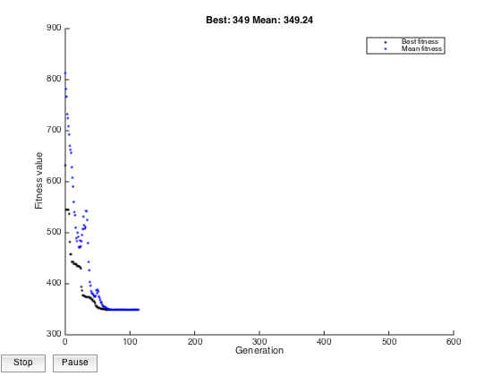
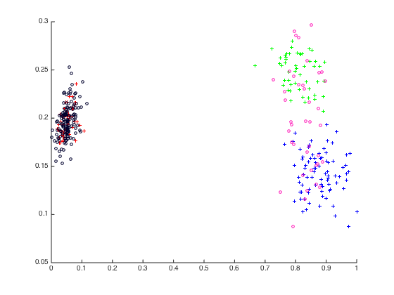

Contents
Called Functions
CoEmbedding algorithm running script
clear classes clear close all clc path='/Users/yuwu/Documents/MATLAB/my_matlab/Relational_embedding/LED_release/datasets'; addpath(path); %match={ 'ring','round','co-dot','SD1','SD2','SD3','SD4','SSD1', 'SSD2','SSD3', 'SSD4',... % 'xor','2dnormals','Aggregation','Compound','circles', 'R15','rface','Pathbased',... % 'CoTarget','CoIris','LetterRecognize','Newletter','ecoli','Codigit','digit04'} load('SD3'); R=CalRelationXY(X,Y,'gaussian','mean');
Warning: Objects of 'onCleanup' class exist. Cannot clear this class or any of its superclasses.
LEDF Model Optimization
opt = {'optimisation', 'ga', 'obj_option', 'quant_knn', 'obj_para', {'knn', 10}};
para_range = {'eta1',[-1.5,11],'eta2',[-1.5,11],'alpha',[0,2], 'beta',[-0.4,2] };
I = {'R', R, 'method', 'LEDFsvd_beta', 'dim',2, 'model_optimisation', opt,'parameter_range',para_range };
o = CoEmbedding(I);
o = train(o);
h=figure;
Plotcluster(o.X',lx,o.Y',ly);
% %% CoEmbedding model evaluation
%
% option = {'evaluation', '3D', 'obj_option', 'quant_knn', 'obj_para', {'knn', 20}};
%
% para_range = {'eta1', 7.7001 , 'eta2', 7.7001, 'alpha', [0.2 ,1.4], 'beta', 0.1700, 'interval', 0.01 };
%
% I = {'R', R, 'method', 'LEDsvd', 'dim',2, 'model_optimisation', option,'parameter_range',para_range };
%
%
% obj_fun_eval = CoEmbedding(I);
% obj_fun_eval = Eval(obj_fun_eval);
It is current running LEDFsvd_beta.....diff_alpha
Best Mean Stall
Generation f-count f(x) f(x) Generations
1 208 641 780.9 0
2 312 606 753.5 0
3 416 552 730.4 0
4 520 552 721 1
5 624 482 706.5 0
6 728 482 706.4 1
7 832 482 693.1 2
8 936 469 656.9 0
9 1040 463 651.5 0
10 1144 460 650.6 0
11 1248 460 633.8 1
12 1352 460 607.7 2
13 1456 460 567.6 3
14 1560 448 549 0
15 1664 445 533.6 0
16 1768 445 530 1
17 1872 445 519.8 2
18 1976 445 494.8 3
19 2080 429 478.9 0
20 2184 417 473.5 0
21 2288 417 491.6 1
22 2392 417 482.6 2
23 2496 372 468.8 0
24 2600 372 463.5 1
25 2704 362 454.2 0
26 2808 348 442.3 0
27 2912 330 443.7 0
28 3016 330 466.2 1
29 3120 330 457.8 2
30 3224 330 432.5 3
Best Mean Stall
Generation f-count f(x) f(x) Generations
31 3328 328 403 0
32 3432 328 393.8 1
33 3536 327 382.8 0
34 3640 327 381.6 1
35 3744 315 368.6 0
36 3848 313 367.1 0
37 3952 313 393.1 1
38 4056 312 395.3 0
39 4160 312 402.2 1
40 4264 312 380.9 2
41 4368 312 351.5 3
42 4472 312 341.1 4
43 4576 312 328.8 5
44 4680 310 324.7 0
45 4784 309 321.9 0
46 4888 306 317.7 0
47 4992 306 324.4 1
48 5096 306 320.5 2
49 5200 306 316.3 3
50 5304 306 314.3 4
51 5408 305 310.6 0
52 5512 305 309 1
53 5616 305 308.5 2
54 5720 304 307.6 0
55 5824 304 306.4 1
56 5928 304 306.1 2
57 6032 304 305.6 3
58 6136 304 305.3 4
59 6240 304 305 5
60 6344 304 304.8 6
Best Mean Stall
Generation f-count f(x) f(x) Generations
61 6448 304 304.6 7
62 6552 304 304.6 8
63 6656 304 304.5 9
64 6760 304 304.4 10
65 6864 304 304.3 11
66 6968 304 304.3 12
67 7072 304 304.3 13
68 7176 304 304.2 14
69 7280 304 304.3 15
70 7384 304 304.2 16
71 7488 304 304.3 17
72 7592 304 304.3 18
73 7696 304 304.2 19
74 7800 304 304.3 20
75 7904 304 304.2 21
76 8008 304 304.2 22
77 8112 304 304.2 23
78 8216 304 304.2 24
79 8320 304 304.3 25
80 8424 304 304.2 26
81 8528 304 304.3 27
82 8632 304 304.3 28
83 8736 304 304.2 29
84 8840 304 304.3 30
85 8944 304 304.3 31
86 9048 304 304.3 32
87 9152 304 304.3 33
88 9256 304 304.3 34
89 9360 304 304.2 35
90 9464 304 304.3 36
Best Mean Stall
Generation f-count f(x) f(x) Generations
91 9568 304 304.2 37
92 9672 304 304.3 38
93 9776 304 304.3 39
94 9880 304 304.3 40
95 9984 304 304.3 41
96 10088 304 304.3 42
97 10192 304 304.3 43
98 10296 304 304.3 44
99 10400 304 304.3 45
100 10504 304 304.3 46
101 10608 304 304.2 47
102 10712 304 304.2 48
103 10816 304 304.3 49
104 10920 304 304.2 50
Optimization terminated: average change in the fitness value less than options.TolFun.
 